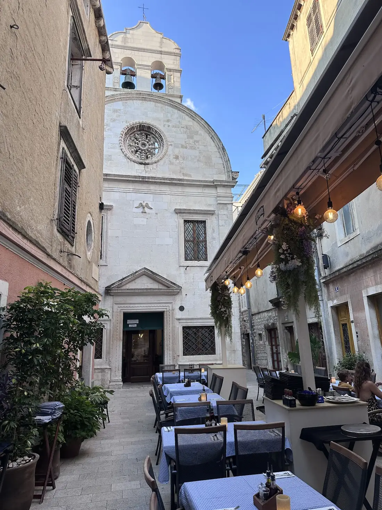
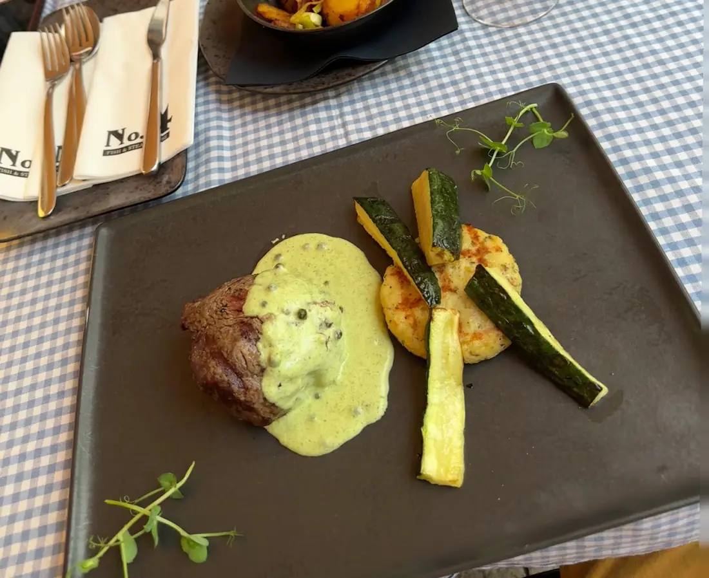
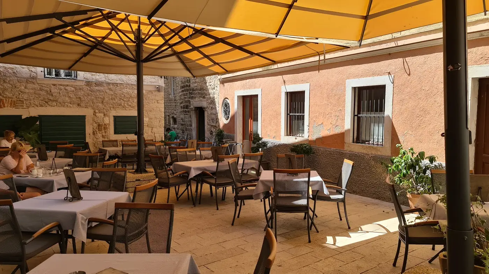

No4
Adresa,
ne ime.
No4 je mjesto koje pamtite po broju vrata. Uličica uz gornju Kalelargu, nekoliko stolova uz kameni zid, pa mali trg na kojem se otvara renesansna crkva sv. Duha. Katedrala sv. Jakova, upisana na UNESCO-ov popis svjetske baštine, udaljena je nekoliko minuta hoda.
Na žaru su tomahawk, T-bone, ribeye i biftek. Uz njih tuna steak, dagnje na buzaru, riblja plata i hobotnica. Uz ručak ide dnevna ponuda: skradinski rižoto, pašticada s domaćim njokima, gulaš No4.
Otvoreno svaki dan od 11 do 23, kuhinja radi kroz cijeli dan. Za večeru je pametno rezervirati, a stolovi na trgu popune se prvi.


